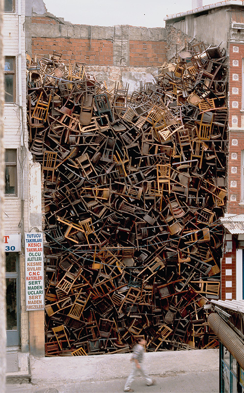
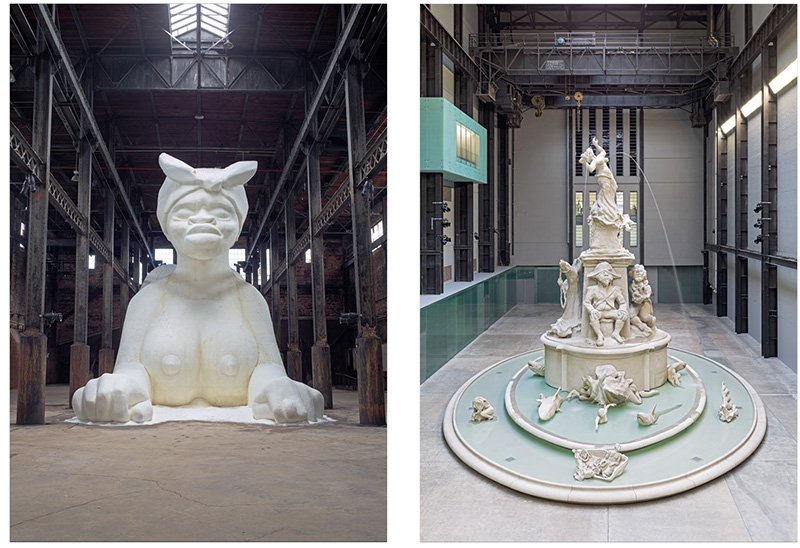
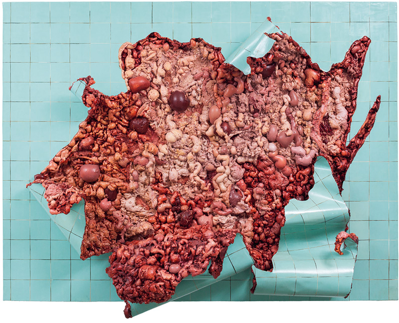
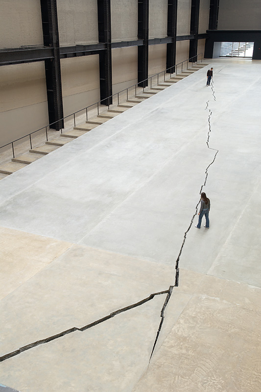
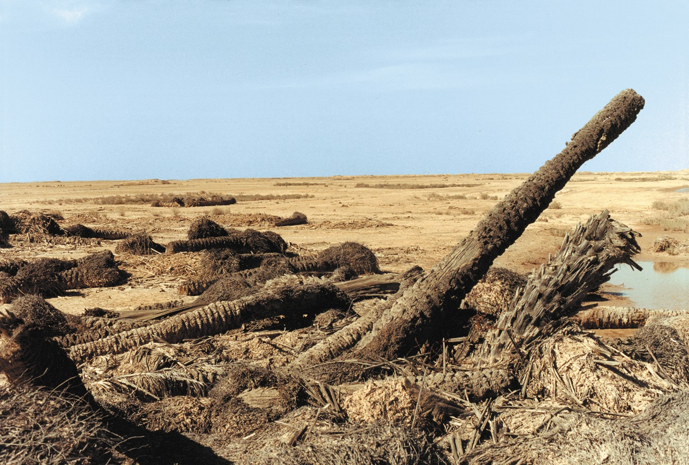
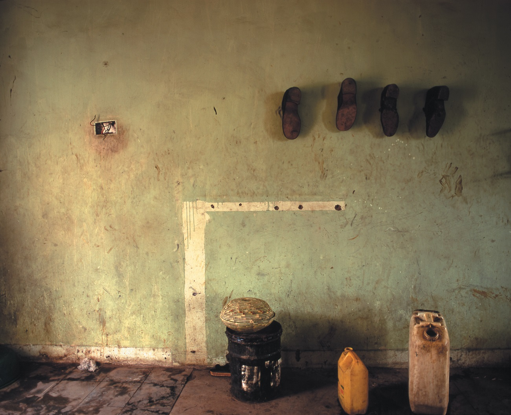
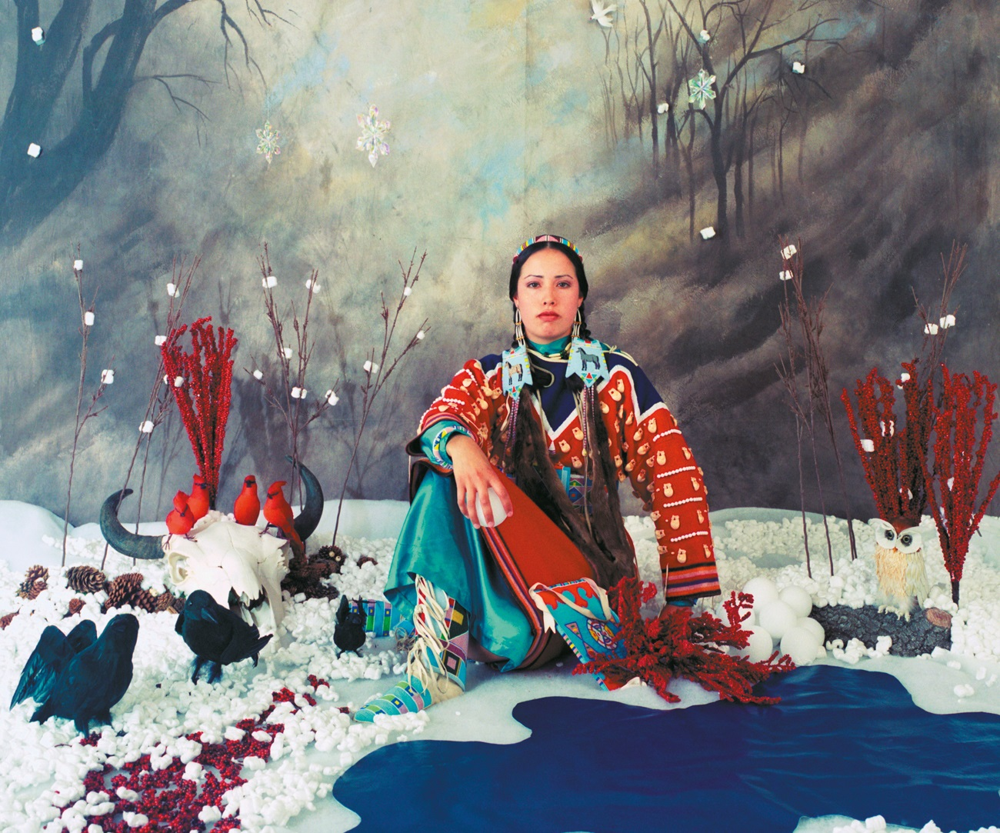

Doris Salcedo
Sem título, 2003.
Instalação temporária com cerca de 1.500 cadeiras de madeira, no intervalo entre edifícios da Bienal de Istambul.
Aula 3 · Bloco inicial condensado
Doris Salcedo · Kara Walker · Adriana Varejão
Hipótese
A aula não começa com uma história geral do colonialismo. Os contextos entram ligados a operações formais: o vazio urbano da Bienal de Istambul, a Refinaria Domino e a economia do açúcar, o barroco luso-colonial e a superfície do azulejo. Peso, escala, deterioração, tato e instituição participam do sentido público das obras.
Arte pública é condição, não cenário
Hessel abre seu capítulo sobre arte pública conectando o questionamento de narrativas coloniais, o significado dos monumentos e a expansão da arte pública no século XXI. Museu, cidade, edifício e instalação temporária não são fundos neutros: entram na própria operação de memória.
| Espaço | O que ele organiza |
|---|---|
| Museu de grande escala | Visibilidade, circulação, autoridade e modo de ver. |
| Cidade e edifício | História material, propriedade, trabalho e memória. |
| Instalação temporária | Duração, desaparecimento e documentação. |
| Monumento | Quem é celebrado, quem é silenciado e qual violência parece natural. |
Obras em foco

Sem título, 2003.
Instalação temporária com cerca de 1.500 cadeiras de madeira, no intervalo entre edifícios da Bienal de Istambul.

Uma sutileza, 2014, e Fons Americanus, 2019.
Duas operações de Walker sobre açúcar, monumento, ruína e comércio transatlântico de pessoas escravizadas.

Azulejaria verde em carne viva, 2000.
Pintura que reúne azulejo, superfície ornamental e entranhas sugeridas.
Doris Salcedo
| Operação | Consequência de leitura |
|---|---|
| Cadeira, objeto doméstico e funcional. | A vida cotidiana aparece como interrompida e não recuperável. |
| Acúmulo de cerca de 1.500 unidades. | A escala impede a individualização sentimental de cada perda. |
| Intervalo entre edifícios. | A obra ocupa um vazio institucional e urbano, não um pedestal. |
| Instalação temporária. | A memória depende de documentação, relato e reaparições posteriores. |
Hessel vincula Sem título à guerra civil colombiana e, simultaneamente, preserva sua abertura para outras perdas e catástrofes. A abertura interpretativa não autoriza qualquer interpretação: ela é sustentada por forma, lugar e matéria.

Doris Salcedo, 2007.
Fenda de 160 metros no piso do Turbine Hall, Tate Modern. Imagem e informações conforme Katy Hessel.
A cicatriz no interior da instituição
O Turbine Hall oferece uma escala quase catedralícia e uma autoridade particular à arte monumental. A linha de Shibboleth divide o espaço destinado à arte contemporânea e faz o corpo desviar, aproximar-se, olhar de cima ou ao nível do chão.
Hessel lê a cicatriz que permanece visível após a instalação como lembrete de tradições ocidentais racistas e coloniais. A obra não ocupa uma instituição neutra: ela faz a instituição aparecer como parte da história que critica.
“Sou uma artista do Terceiro Mundo [...] da perspectiva da vítima [...] do povo derrotado, é desse lugar que vejo o mundo.” Doris Salcedo, citada por Hessel.
Kara Walker
| Elemento | Operação crítica possível | Risco que a obra mantém exposto |
|---|---|---|
| Açúcar | Materializa economia colonial e trabalho explorado. | Doçura, consumo e fetichização da violência. |
| Escala monumental | Devolve presença a uma história rebaixada. | Transformação da dor em espetáculo fotogênico. |
| Refinaria em demolição | Faz edifício e mercadoria falarem juntos. | Ruína industrial convertida em evento cultural. |
| Corpo-esfinge | Perturba estereótipos de raça, gênero e serviço. | Repetição visual desses mesmos estereótipos. |
Na Refinaria Domino, o açúcar não ilustra uma história colonial. Cheiro do edifício, arquitetura industrial, trabalho escravizado caribenho, raça, sexualidade e capitalismo entram na experiência. A crítica não está garantida pela intenção, pois a obra obriga a analisar também o risco de consumir trauma como espetáculo.
Adriana Varejão
| Elemento | História visual mobilizada | Operação na obra |
|---|---|---|
| Azulejo azul, branco ou verde | Barroco europeu, Portugal e ex-colônias. | Superfície de ordem, ornamento e circulação colonial. |
| Carne e entranha | Corpo aberto, repulsa e vulnerabilidade. | Ruptura da integridade visual e moral da decoração. |
| Pintura | Tradição de beleza e domínio da superfície. | Campo em que sedução e violência não podem ser separadas. |
| Fissura | Dano aparentemente localizado. | Evidência de uma história estrutural, não acidente pontual. |
Hessel escreve que Varejão funde “entranhas” macabras a azulejos imaculados, expondo uma violência escondida pela beleza. A pintura não organiza uma oposição simples entre aparência e verdade: produz uma superfície que carrega decoração, poder, circulação e ferida.
Três regimes materiais de memória
| Doris Salcedo | Kara Walker | Adriana Varejão |
|---|---|---|
| Cadeira e fenda: ausência, bloqueio, cicatriz. | Açúcar e arquitetura: mercadoria, trabalho, espetáculo. | Azulejo e carne: superfície, ornamento, ferida. |
| O espaço torna a perda não ocupável. | A economia colonial torna-se matéria sensorial. | A beleza colonial torna-se visualmente insustentável. |
| A instituição é ferida. | O monumento é deformado. | A pintura é aberta por dentro. |
Fotografia: vestígio, espaço e arquivo colonial
Em seu capítulo “Moments in History”, Charlotte Cotton mostra que a fotografia contemporânea enfrenta eventos históricos por estratégias que se afastam do fotojornalismo: chega depois do acontecimento, trabalha com seus vestígios e procura posições menos objetificantes diante da experiência humana. As três artistas abaixo prolongam, por outros meios, o problema colocado por Salcedo, Walker e Varejão.

Iraq, 2001.
Cotton acompanha o trabalho de Ristelhueber sobre as consequências da Guerra do Golfo: vestígios de bombas, deslocamentos de tropas e ecologias destruídas. A fotografia não ilustra a guerra, torna visível sua duração material.

Memories Were Trapped Inside the Asphalt, 1998-2003.
Cotton situa a série após o retorno da artista a Uganda, de onde ela e sua família foram expulsas em 1972. Espaços e naturezas-mortas fazem ressoar eliminação, apagamento e uma situação cotidiana suspensa.

Four Seasons: Winter, 2006.
A artista Apsáalooke reaproveita convenções de levantamentos fotográficos, dioramas museológicos e exposições coloniais. A encenação devolve agência à sua autorrepresentação e expõe o caráter imperial dessas imagens.
Fotografia: documento de instalação ou nova economia de imagens?
Uma fotografia de obra temporária preserva uma relação que não será reencenada do mesmo modo. Ao mesmo tempo, ângulo, escala, público e edição podem converter espaço, cheiro, perigo ou materialidade em imagem limpa. A documentação não é uma etapa posterior: participa da memória pública da obra.
Em Walker, a circulação fotográfica pode ampliar tanto a crítica quanto o espetáculo. Em Salcedo, a fotografia registra a fenda ou o intervalo ocupado por cadeiras, mas não substitui a coreografia corporal do risco, do desvio e da aproximação. Em Varejão, o enquadramento também decide quanto da superfície ornamental e da ferida se torna visível.
Vídeos de apoio
Seminário
Escolha uma obra e indique de que modo sua forma material impede, dificulta ou arrisca uma recepção confortável do passado. Sustente a resposta por uma decisão observável da obra: o vazio entre edifícios, a fenda no museu, o açúcar, a arquitetura industrial, o azulejo, a carne sugerida, o vestígio fotográfico ou o dispositivo de arquivo.
Leituras-base: Katy Hessel, A história da arte sem os homens, Parte Cinco, “Arte pública e monumentos modernos”; Charlotte Cotton, The Photograph as Contemporary Art, capítulos “Once Upon a Time” e “Moments in History”. As formulações entre aspas nesta página são atribuídas conforme as edições consultadas.